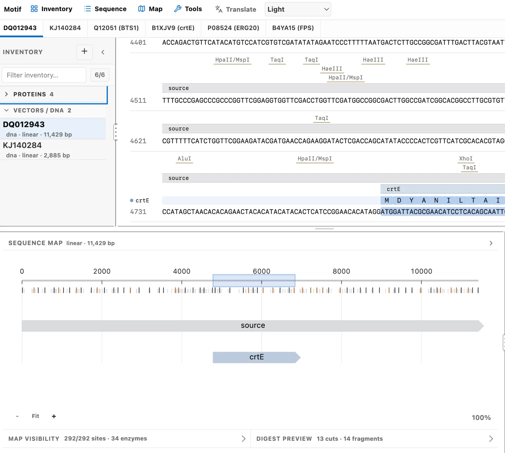
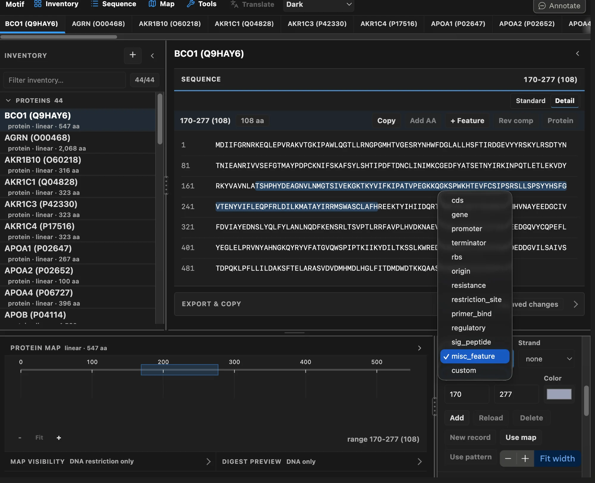
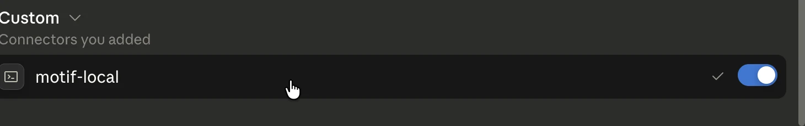
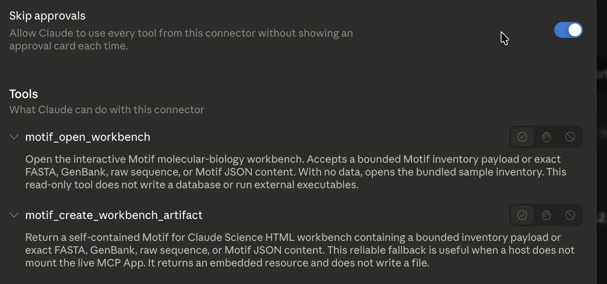
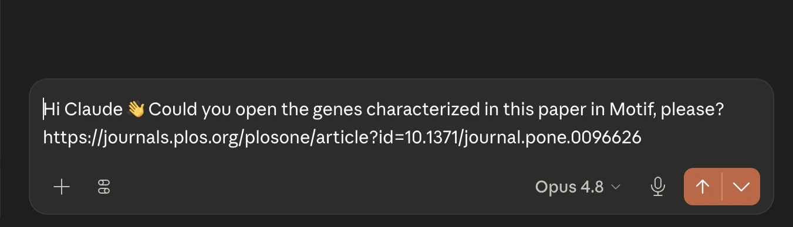
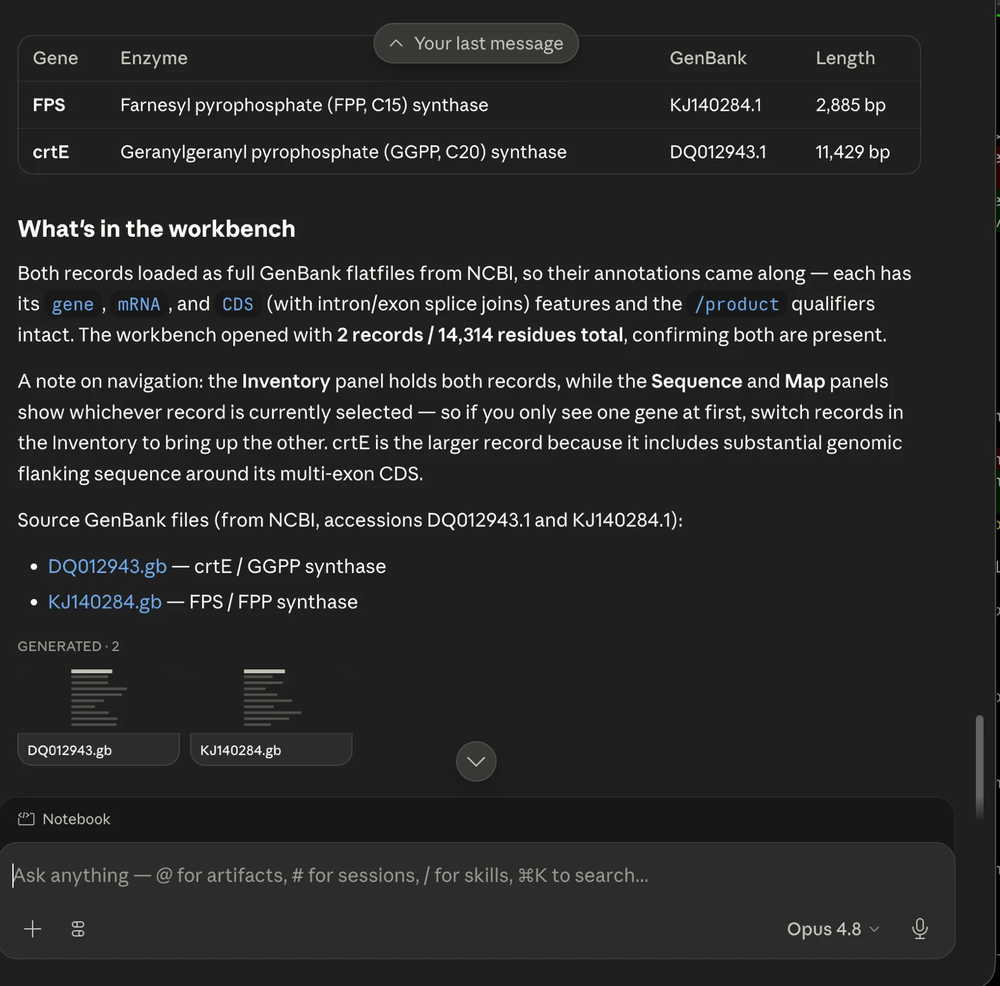
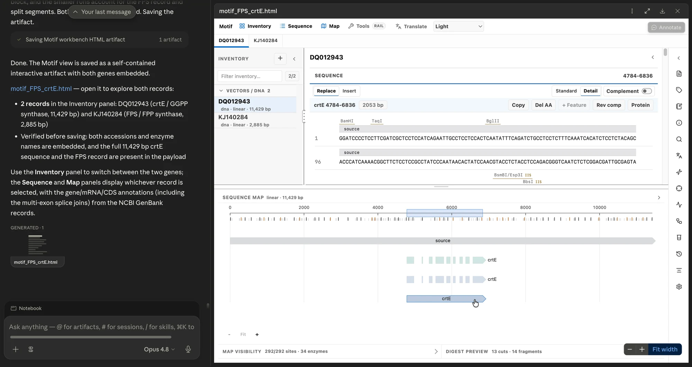
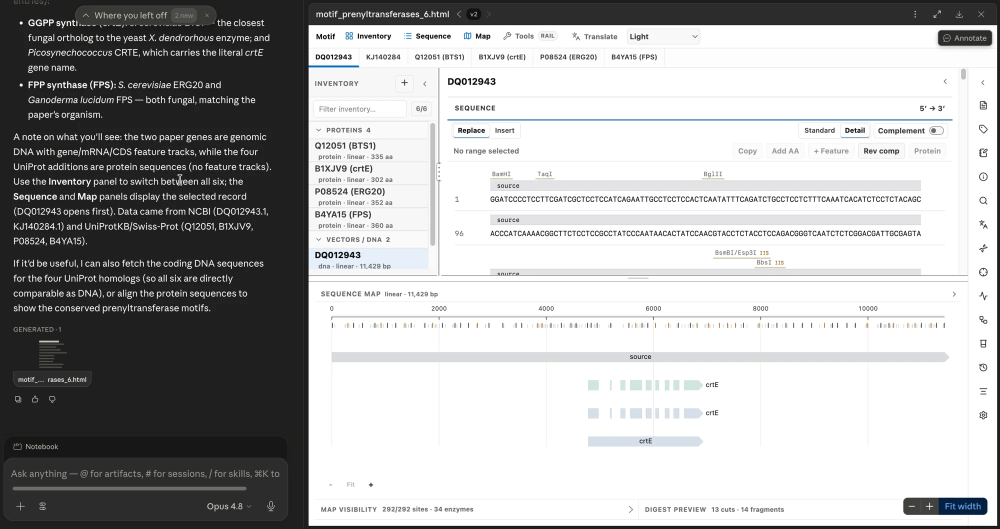
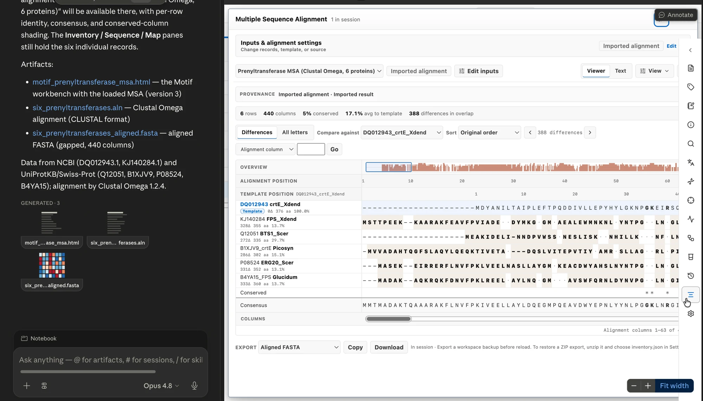

Sequence work Claude can see, run, and hand back.
Motif is a molecular-biology workbench for Claude Science. View maps and alignments, keep records and notes, and work without leaving Claude Science.

Watch the Motif hackathon video.
Made for the Built with Claude: Life Sciences hackathon. Click play to watch it here, or watch it on YouTube.
Run Motif in Claude Science.
Motif runs from a local checkout. You need Node 22.12+ and permission for Claude Science to read the Motif folder.
Hand it to Claude Code.
Open Claude Code in a new folder and paste this:
Set up Motif for Claude Science from https://github.com/jvogan/motif
Claude Code reads the setup guide, clones the repo, installs, and registers the connector. You then grant the folder and reconnect in Claude Science, steps 3 to 5 below.
Or run each step yourself.
-
Get the code
Clone the repository and install dependencies.
# needs Node 22.12+ git clone https://github.com/jvogan/motif cd motif && npm ci
-
Build and register the connector
One command builds Motif and adds the local connector.
npm run claude-science:setup -
Grant the folder in Claude Science
Open Permissions and grant the exact Motif folder.

Grant the folder as read-only or read and write. -
Relaunch and reconnect
Fully quit and reopen Claude Science, then reconnect motif-local.
-
Confirm, then try it
motif-local appears under Connectors, in the Custom group. Ask Claude Science to open a sequence, for example Open pUC19 in Motif. Type your request, or speak it with Claude Science's dictation.

Approve the tool call, or choose how long the approval lasts.
Open a pathway in Motif.
A narrated walkthrough: ask Claude Science to open the beta-carotene pathway, and its four genes load into Motif with sequence, protein translation, and a restriction map. Speak or type your requests, and read every result without leaving Claude Science. Plays with sound.
One prompt prepares a pathway workbench.
In one Claude Science session, ask Claude to find public pathway records and create a Motif artifact. Motif validates and displays the supplied records; external data retrieval remains outside the workbench.
-

UniProt Q9HAY6 → Reactome R-HSA-975634 · retinoid metabolism -

44 records · GPC1 (P35052) · protein · 558 aa -

Align in browser · or MAFFT / MUSCLE / Clustal Omega -

BCO1 vs GPC1 · 592 columns · 20% conserved · export aligned FASTA
Maps, alignments, digests, and guide design.
Motif handles your sequence work in Claude Science. Open genes with circular and linear maps, run restriction digests, translate to protein, align records, and design guides. Every record stays on the same workbench. Plays with sound.
Plan a construct before you build it.
Screen a plasmid against 153 built-in restriction enzymes, isolate the unique cutters, preview the digest geometry, and plan Gibson or Golden Gate assemblies, with internal Type IIS sites flagged during assembly planning.

- Restriction digest with fragment sizes and cut positions
- Primer design with Tm / GC tuning and enzyme-tail presets
- Gibson & Golden Gate planning with compatible-overhang checks

Translate and analyze a sequence.
Translate a selected range or coding feature with a supported NCBI genetic code, inspect ORFs and sequence statistics, or scan for a literal motif or PAM-based guide candidate. Derived proteins retain their source and effective genetic code.
- Six-frame ORF detection, GC, composition, Tm, and molecular weight
- Record- and feature-level NCBI genetic-code selection
- Translation, reverse complement, motif search, and guide candidates
Inspect every artifact Claude prepares.

Type IIS sites, impossible cuts, and stale primer inputs. Fix the input and recompute.Read, cut, analyze, and export, on one bench.
Motif's built-in functions are deterministic and run locally in the HTML. Native alignment engines run only through the explicit no-shell helper outside the browser.
Read & inspect
Circular and linear maps that stay synchronized with the sequence.
- Circular plasmid maps
- Feature annotations
- Reading-frame overlays
- Live GC & length stats
Cut & clone
Plan a construct, with conflicts flagged early.
- Restriction digest
- Primer design (Tm / GC)
- Gibson & Golden Gate
- PCR simulation
Analyze
Common measurements, computed the same way each time.
- Six-frame ORF detection
- GC, Tm & composition
- NCBI genetic-code selection
- IUPAC motif search
Transform
Turn one record into another and keep its history.
- Range & feature translation
- Reverse complement
- Derived protein records
- Parent & provenance notes
Import & export
Import and export standard formats, plus a portable snapshot.
- FASTA
- GenBank
- Raw sequence
- Self-contained workspace
Claude intake
Two narrow connector tools prepare a bounded viewer or portable artifact.
- FASTA, GenBank & raw sequence
- Validated Motif payloads
- Read-only viewer/export tools
- No generic DOM or shell bridge
One record across its views.
 map ↔ bases in sync
map ↔ bases in sync guide → target
guide → target inventory → insight
inventory → insight compact → panoramic
compact → panoramicInspect the page-local API.
The standalone workbench exposes bounded page-local functions for verified browser automation. The Claude Science connector does not expose these functions as a generic browser bridge.
// inspect the page-local contract and active record window.motifHelp() window.motifGetActiveRecord()
Motif as a Claude Science connector.
After npm run claude-science:setup registers the server, Motif is a connector you open from Claude Science. Grant access, choose approvals, then ask Claude Science to open a sequence or build a workbench.

Setup adds one connector named motif-local. It appears under Connectors, in the Custom group with the connectors you added.

Open motif-local to see its two tools, motif_open_workbench and motif_create_workbench_artifact. Leave approvals on and Claude Science shows a card before each call. Turn on Skip approvals to let it run them without a prompt.
From a paper to a Motif alignment.
Point Claude Science at a paper and ask it to find public records, then create a Motif artifact from the complete retrieved data. Follow-up requests create newly generated snapshots rather than silently changing a saved artifact.
-

PLOS ONE · 10.1371/journal.pone.0096626 -

FPS KJ140284.1 · crtE DQ012943.1 · 2 records, 14,314 residues -

motif_FPS_crtE.html · Inventory · Sequence · Map -

6 records · 2 paper genes + 4 UniProt homologs -

6 rows · 440 columns · Clustal Omega 1.2.4
If the workbench does not open in the viewer
Claude Science sometimes finishes by saving the workbench without opening it. Ask it to open the records in the Motif viewer, or include that in your first prompt.
Common problems and their fixes.
Most setup problems are about giving Claude Science's sandbox access to your files. The troubleshooting guide covers the rest.
“Operation not permitted,” or the tools won't load
The tool ran, but no workbench appeared
The sequence shows as plain text
The connector shows up, but its tools are missing
Node installed through nvm or asdf gets denied
Try one of these prompts.
Open Motif in Claude Science and paste any of these.

Meet the lab crab
The Motif mascot.
Welcome to the benchOpen Motif in Claude Science.
Load a plasmid, then inspect the records that come back.